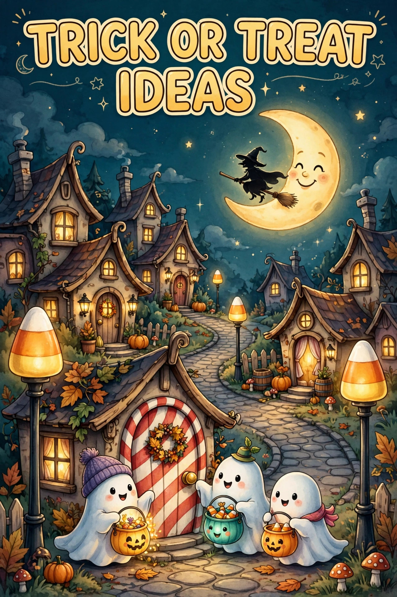

Halloween Trick-or-Treat Ideas 2026: Beyond Candy
Published October 13, 2026 · Updated October 13, 2026 · By EventBuzz Team

Trick-or-treating is Halloween's beating heart — and the houses kids remember are the ones that did something different. For Halloween 2026 (Saturday, October 31), these trick-or-treat ideas go beyond the standard candy bowl: creative treats kids actually love, house setups that make treat-giving an event, candy station ideas, the teal pumpkin allergy-friendly tradition, and the safety checklist every family needs for the big night.
The trick-or-treat rule: be the house kids talk about on the walk home. One memorable detail beats a bigger candy pile.
Beyond Candy: Treats Kids Actually Love
- Glow gear: glow sticks, light-up rings, and mini flashlights. Kids wear them all night, parents love the visibility, and they stand out from the 50th chocolate bar.
- Temporary tattoos: Halloween tattoo sheets — bats, skulls, spider webs. Cheap in bulk, endlessly fun to apply on the spot.
- Mini playdough or slime: small tubs in Halloween colours. The rare non-candy treat kids get genuinely excited about.
- Stickers and stamps: Halloween sticker sheets and self-ink stamps. Perfect for the youngest trick-or-treaters.
- Pencils and erasers: spooky pencils, ghost erasers, mini notebooks. Parents approve, kids collect.
- Small toys: bouncy balls, finger puppets, mini figurines. A "toy bowl" next to the candy bowl makes your house legendary.
- Coins for older kids: a few coins in the bucket for teens — they appreciate it more than candy, and it costs you less than premium chocolate.
The Ultimate Treat-Giver Setup
- The candy station: do not just hold a bowl — build a station. A small table by the door with a pumpkin candy bowl, a cauldron, and a sign. Presentation turns handing out candy into an attraction.
- Two-bowl system: one bowl of candy, one bowl of non-food treats (the teal pumpkin bowl). Every child gets something they can enjoy.
- Themed serving: a witch's cauldron, a pumpkin-head bowl, or a treasure chest. Serveware is decor that holds treats.
- Sound and light: a motion-activated cackle or creaking door plus a lit path to your door. Kids should hear the fun before they see it.
- The full-size bar house: if the budget allows, full-size candy bars make you a neighbourhood legend. Even one year of it gets remembered for a decade.
- Photo spot: a small decorated corner with a "Happy Halloween 2026" sign where kids pose with their haul. Parents will tag your street for years.
The Teal Pumpkin Project (Allergy-Friendly Treating)
One in thirteen children has a food allergy, and Halloween can be the hardest night of their year. The Teal Pumpkin Project is simple: place a teal-painted pumpkin by your door to signal you offer non-food treats, and keep a separate bowl of toys, stickers, and glow items. It costs almost nothing, it means everything to those families, and it has become one of Halloween's best-loved traditions. Keep food and non-food treats in separate bowls so there is no cross-contact.
Creative Twists on the Classic Night
- Trunk or treat: decorate your car boot and hand out treats from a parking lot with other families. Safer for little ones, social for parents, and the decorated cars are half the fun.
- Scavenger hunt route: give kids a map with Halloween stops — find the ghost house, count the pumpkins, spot the witch. Turns the neighbourhood into a game.
- Treat choice wheel: kids spin a wheel to win their treat category — candy, toy, or "mystery". Gamifying the bowl makes your house the favourite stop.
- Reverse trick-or-treat: leave treat bags on neighbours' doorsteps earlier in the day, especially for elderly neighbours who love Halloween but cannot participate at night.
- Haunted garage: convert the garage into a walk-through mini haunt with treats at the end. Funny-spooky for kids, genuinely fun to build.
Trick-or-Treat Safety Checklist
- Visibility: reflective tape on costumes, glow sticks or light-up wands for every child, and flashlights for the adults. Drivers must see them.
- Route planning: stick to well-lit streets, go in groups, and agree the route and return time before leaving.
- Costume safety: no masks that block vision (use face paint instead), hemmed costumes that do not drag, and comfortable shoes for miles of walking.
- Check the haul: inspect all treats at home before eating — discard anything unwrapped, homemade from strangers, or with damaged packaging.
- House safety (for givers): keep paths clear and well lit, use LED candles (never real flames near costumes), secure pets away from the door, and clear the pavement edge of trip hazards.
- Allergy awareness: carry safe treats for kids with allergies, and teach children not to eat while walking — the haul gets checked at home.
Timing & Etiquette
- Hours: most neighbourhoods trick-or-treat from around 5:30 PM to 8:30 PM. Porch light on means welcome; porch light off means skip.
- One house rule: teach kids to take one (or a small handful) and say thank you. The houses giving generously deserve the manners.
- Respect the "off" houses: dark porch, no decorations — walk past. Not everyone celebrates, and that is fine.
- End time: wind down by 9 PM out of respect for neighbours. The night belongs to everyone on the street.
Frequently Asked Questions
What can I give instead of candy for trick-or-treat?
Glow sticks, temporary tattoos, stickers, mini playdough, Halloween pencils, bouncy balls, and small toys. Non-candy treats stand out, suit kids with allergies, and often cost less than premium chocolate.
What is the Teal Pumpkin Project?
A teal-painted pumpkin by your door signals you offer non-food treats for children with food allergies. Keep a separate bowl of toys, stickers, and glow items — no cross-contact with candy — and you have joined one of Halloween's best traditions.
What time does trick-or-treating start in 2026?
Halloween 2026 falls on Saturday, October 31st. Most neighbourhoods trick-or-treat from about 5:30 PM to 8:30 PM. A lit porch means welcome; a dark porch means skip the house.
How do I keep trick-or-treaters safe at my house?
Keep paths clear and well lit, use LED candles instead of real flames, secure pets away from the door, and remove trip hazards from steps and the pavement edge.
Should I check my kids' candy after trick-or-treating?
Yes — inspect everything at home before anyone eats. Discard unwrapped items, homemade treats from strangers, and anything with damaged packaging. Teach kids not to eat while walking.
Conclusion
Go beyond the candy bowl: add a toy bowl, light the path, build a little station, and put out a teal pumpkin. Be the house kids talk about on the walk home — and keep everyone visible, safe, and welcomed. That is what Halloween night is really about.
Plan the whole celebration with these guides:
Happy haunting — and Happy Halloween 2026!
Trick-or-Treat Essentials
Candy bowls, treat buckets and light-up wands — everything for givers and goers.


Prices shown at the time of publishing and can change. Links take you to Temu, where shipping and delivery details are shown.